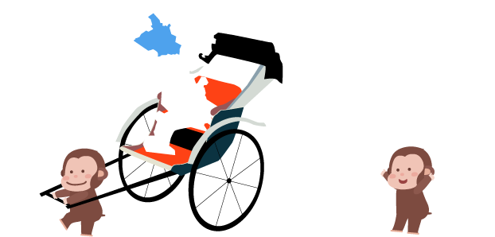

2/6
鎌倉まちあるきアイデアソン＠長谷別邸レポート
2/6
鎌倉まちあるきアイデアソン＠長谷別邸レポート
第1部
２月６日（土）、長谷別邸で鎌倉市大会として、「鎌倉まちあるきアイデアソン＠長谷別邸〜歩行者移動支援とユニバーサルツーリズム〜」が開催されました。
鎌倉の歴史ある街並みにとけ込んだ、和の雰囲気溢れる邸宅である長谷別邸では紅梅白梅が美しく咲き始め、穏やかな雰囲気の中、約20名の方々が参加しました。
誰もがまちあるきを楽しめる街となるために、観光スポット・公共施設等のバリアフリー設備の情報を集め、鎌倉市のオープンデータとして「歩行者移動支援情報」を整備する、まちあるきワークショップと、そこから生まれる新しいサービスのアイデアを競う「アイデアソン」の二部構成でイベントを開催しました。
開会の挨拶の後、ユニバーサルなまちあるきに関わる活動をしていらっしゃる「かまくらっぷ」さん、「i-link-u」さんから、活動の紹介をいただいたのち、まち歩きとデータ収集についての説明を行いました。
カマコン宮田さん、株式会社パスコ高塚さんにより進行。
かまくらっぷさんの活動報告。
i-link-uさんの活動報告
ランチタイムにはチームごとにそれぞれエリアを分け、まち歩きへ。
バリアフリーの目線で段差や通行のしやすさなどに注目しながらまちあるき。
まち歩き終了後、集めたデータの入力を行いました。
第2部
第2部、アイデアソンはカマコン流「ブレスト（ブレインストーミング）」でアイデア出しからスタート。

出されたアイデアを元に、４つのテーマで改めてチーム編成を行い、各チームでのアイデア企画を開始。
２時間ほどのワークのあと、各チームの発表。
イベント企画。バリアフリー天国（ばりてん）と題し、鎌倉海浜公園や由比ヶ浜海岸、周辺の地域を使って、バリアフリーに関わるまち全体でのイベント。
目をふさいでみんなで食事をしたり、何かを作ったりする「ランチインザダーク」、ハードルを下げて多くの人が体験できるマリンスポーツ、ビーチでは波の音を楽しみ、体育施設では車椅子バスケやブラインドサッカーなどのスポーツ観戦、車椅子マラソンを開催する。
チーム「ぼたもち」
「鎌倉コンシェルジュ」を設置し、鎌倉のおもてなしを向上させるアイデア。
外国人の方、障がいのある方全てが鎌倉のまちを楽しめるように、パート（エリア）を決めて配置し、車椅子の人を手伝ったり、外国語での案内をフォローする。
今後外国に行ってみたい、外国語を話したいと思う学生を採用し、学生の育成にもつなげる。
今後、オリンピックが開かれるので、新しい鎌倉スタイルを提案していきたい。例えば、お寺で座禅宿泊や民泊や、宗教の違う人にも優しい食の提案や、フードコートの提供なども。
チーム「welcomeプロジェクト」
3Dスキャンでの道路のバリアフリーデータを取得するとともに、一般の方にもレンタサイクル、レンタセグウェイ、レンタル車椅子などを利用する際にポイント制でインセンティブをつけ、ドライブレコーダーなどのIoTデバイスを活用してデータの収集を行い、まち案内等に活用する。
寸劇形式での発表で盛り上がりました。
ゲームアプリのアイデア。 バリアフリー化だけを焦点にするのではなく、今あるバリアをクリアする（体験する）ことに焦点をあて、クリアに応じたアバターのレベルアップと、エリアの制覇の可視化によるゲームアプリを作る。 バリアのデータの収集を行うとともに、周囲の助けをもらえるような呼びかけ機能を持たせることで、人の温かさでバリアをクリアしていくことを狙いとする。
チーム「KAMAKURA QUEST」
審査員のみなさん（参加者全員）による厳正な審査の結果、優勝はチーム「KAMAKURA QUEST」、準優勝はチーム「オープンデータ」に決定しました。
鎌倉市より表彰状の授与。
参加者全員で記念撮影。